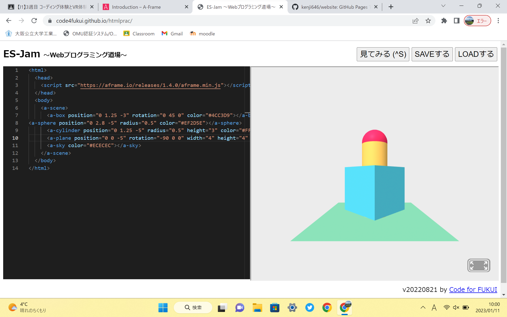
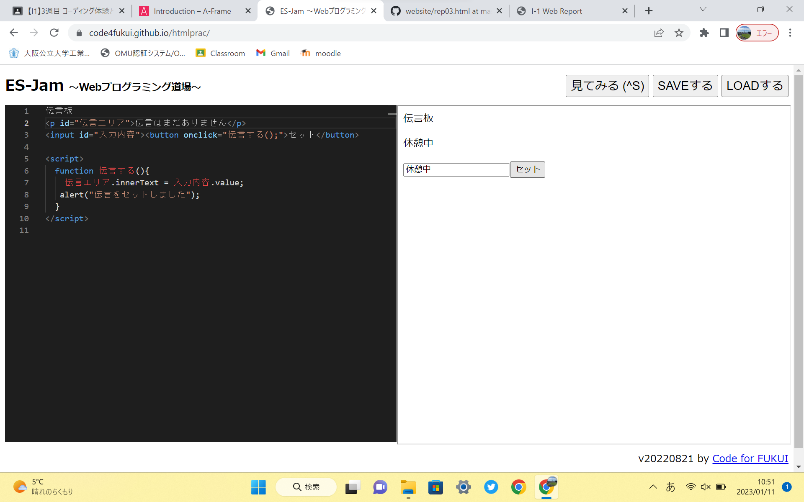

第3週目
3-1 JavaScript体験：VR空間を作る

3次元モデル
1.内容
A-FrameとES-Jamを用いてVR空間を作った。円柱、立方体、球のオブジェクトを用いた。
2.感想
プログラムを用いて3Dモデルを作るのは初めてだったのでとても新鮮だった。
3-2 JavaScript体験：伝言プログラムを作る

伝言板
1.内容
JavaScriptの体験として、伝言を入力すると伝言が表示される伝言プログラムを作った。
2.感想
このような形式のプログラミングをするのは初めてだったのでとても新鮮だった。スクラッチとは違い、少しのミスでバグを起こすため苦労した。
また、ミスは自分ではなかなか見つからないということも学んだ。
3-3 JavaScriptプログラムの３次元空間の体験
1.内容
VRゴーグルを用いて、VR空間内の3Dオブジェクトに球を飛ばした。
2.感想
前回同様、現実世界を忘れてしまいそうだった。また、球を飛ばしていくと突然白い空間に入ってしまった。
球は引き続きそのまま飛ばせるものの、オブジェクトが消えてしまった。